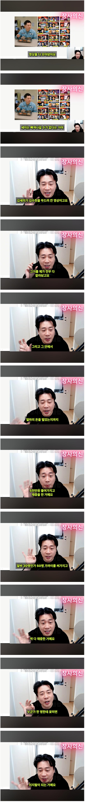
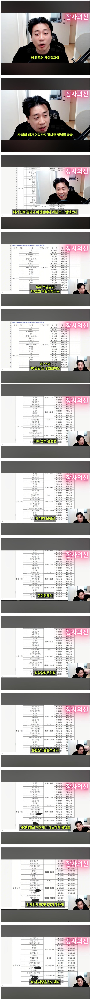

김세의 구속 결정적 자료, 내가 줬다…장사의신 은현장 폭로 | 한국경제
은현장은 16일 자신의 유튜브 채널 라이브 방송에서 "김세의가 저에게 한 허위사실적시 명예훼손 5건, 모욕 5건 모두 송치가 됐다"며 "(김세의가) 동영상에서 애매하게 말해서, 하나하나 채증하고 확인해서 10건을 고소했는데 다 송치된 것"이라고 기뻐했다.
은현장은 김세의와 정면대결을 선언하고, "2022년부터 (김세의가 구속된) 2026년 5월까지 5000만원을 들여 가세연의 모든 영상을 직접 채증해 보관하고 있다"며 "3000여 개의 동영상을 모두 갖고 있는 건 국내에 나뿐일 거다. 왜냐면 다 지웠기 때문"이라고 말했다.
김세의 방송한 5년치 영상을 싹다 채증함
알바 수십명 써서 1825시간 영상 분량을 전부 채증하고
그 영상으로 얼마나 후원을 받았는지 싹다 정리
이게 중요한게 김세의가 해당 영상으로 얼마나 이득을 받았는지 산출이됨...
김수현이 고소를 해서 김세의가 구속된게 맞는데
그전에 장사의신이 김세의가 방송해서 김수현 언급하고 후원받은거 싹다 채증
장사의신이 없었으면 김수현도 언젠가는 무혐의 인정되고 복귀할수 있었을테지만 지금보다 훨씬 오랜 시간이 걸렸을것임
참고로 김건모가 가세연에게 저격당한후 무혐의 인정되고 복귀하기까지 6년이 걸림
이정도면 김수현이 방송 한번 나와도 되는거 아니냐?